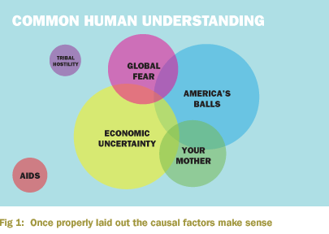
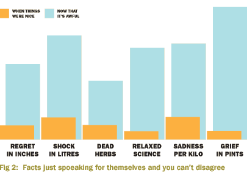

Because that's what happened on that fateful morning, as half of america, in terrible realisation, dribbled cereal down its chin, or stopped masturbating for maybe five or six minutes, or took its fist out of a chicken and wiped it on the curtains - Our balls as a nation were slammed under the wheels of a speeding truck made of terrorism. Our balls were stretched and pulverised and kicked and recieved friction burns and even papercuts. Our balls. The balls of America.
If we could have made a noise, collectively that morning, all of us speaking as one, our confusion and wrath and surprise and more confusion because when you're confused you are so confused you can get confused twice: it would have been "our balls have been harmed"
It is easy now to rethink backwards with behindsight to how our faces, like slapped arses, slumped in front of our knowledge giving minty televisions, and think how we would slap ourselves awake and say "do something, Susan!". To say, "do something, Steve!", or Ken, or Emily, or Nigel, or Declan, or Matthew, or Ivan, or Stephanie, or Assumpta, or Dave, or Wendy, or Simon, or Pamela, or Clinton, or Sheila, or Natalie, or Brian Adams, if he was there. Imagine if bryan Adams was there!
And then we went into a period where we were licking our wounds. In fact we got to that point very quickly, and when you think about it, most of our wounds were on our balls, as a country.
So we were licking our balls for a year.

It wasn't the loudest, or the greenest, or the widest attack on freedom that's ever been perpetrated, but it is the tallest, and therefore deserving of the most attention. Tall people are interesting, especially if they are models: the reverse applies to airplanes flying into buildings.
And this is a central element that many people miss: if 911 had just been a model airplane flying into a model of the world trade centre, the world would have looked the other way. Probably a whole bunch of different ways actually, but we would not have stood, clenching our every part, panting at the newstrough for the tiniest lick of knowledge as we did. We often fail to think thorugh a scenario like this, because we do not think about it, are not interested in it, or have judged it to be irrelevant.
Well wake up, America!

The key to the events of that fateful 911th day of september, at 9.11am near 911th street lie concealed in dossiers so secret, even the requests to declassify them had been encrypted and eyes-only. Once I finish this article, it will be taken to a secure vault in the rocky mountains and stared at for eleven weeks by three absolutely enormous soldiers, in shifts. Only then will it be trusted to be allowed near the news mechanisms and media pumps that can flop it out to the general public.
The true story of 911 begins not in 910 or 909, as many would expect, but in 329, a completely different number.
329 basin street in Miami Florida is the adress of a motel where certain members of miaimi's elite chefs meet. Conicidentially, 329 of them attend this annual event, an annual event that happens every year - or so we are led to believe.
Recipes for many kinda of meals would be exchanged at these motel gatherings. In hindsight, the FBI could never have been aware enough of the type of recipes being exchanged bacuase of their sheer volume - the terrorists had thought of everything. We interviewed chefs who clearly stated that after a while, recipes for soup which came from the internet began to circulate, so much so that pretty soon all of the soup being made in miami had come from the internet, and people were enjoying soup on a daily basis without the slightest thought of where the idea for the soup had come from.
There are 582 restaurants in Miami Florida that serve soup on a wednesday. Add that number to the number of chefs that originally allowed the internet soup to leak into the public domain - 329 - and you get, yes that's right, staring you coldly in the face like Bobby Ewing just out of the shower: 9.1.1.
People continued to eat soup - or drink it, as you will - before, after and during the september attacks. When interviewed afterwards, over 58% of these people admitted to later drawing rectangles that resembled the twin towers. A number of them said they thought about the twin towers once or twice during the period leading up to the attacks: some of them said they saw the towers in films or in television, some of them said they thought of the twin towers for no reason at all.
By the time the attack commenced, Miami was in the grip of people eating soup. At least four thousand miami people - more than the nbumber that died in the twin towers - ate soup that morning. Soups splashed from pots into bowls and was spooned recklessly into mouth after mouth as the day staggered on. Many of the people interviewed didn't remember having soup at all that day. Many of them just remembered the attacks. But everyone who ate soup that day recalls feeling strong feelings with regard to the attacks, the twin towers and the events of the day.
Perhaps Fate had touched someone inappropriately that day. Perhaps God himself was picking up his teenage daughter from school and found himself watching her friends taught calves as they walked across the road towards his car, allowing his mind to wander. Perhaps the devil himself was driving to the shop to get some milk and maybe a newspaper when he ran into his aunt Susan, who he really doesn't like.
Perhaps - as some say - perhaps, perhaps, perhaps.